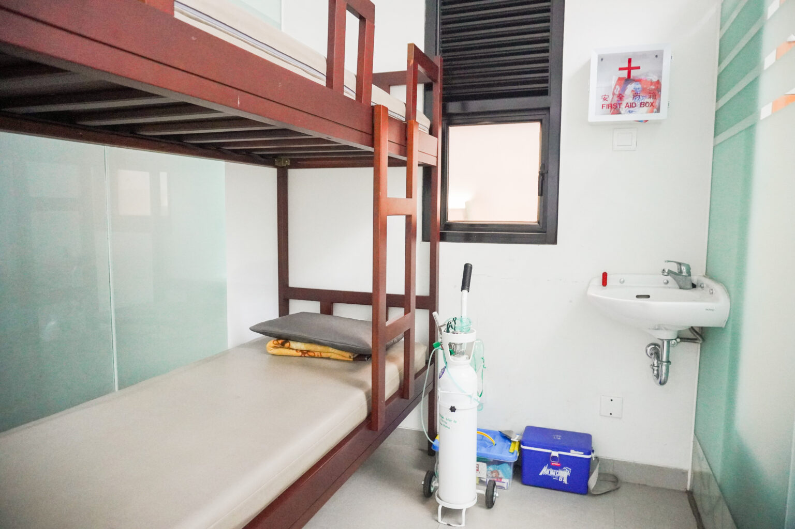
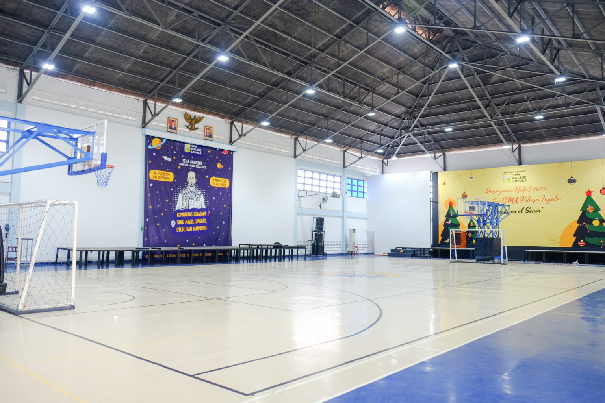

Lapangan Bola
Lapangan bola digunakan untuk kegiatan olahraga, perlombaan, upacara dan acara-acara lainnya

Laboratorium Fisika
Laboratorium fisika digunakan untuk melakukan praktek pelajaran fisika. Terdapat banyak peralatan fisika disini.

Laboratorium Kimia
Laboratorium kimia digunakan untuk melakukan praktek pelajaran kimia. Terdapat banyak peralatan kimia disini.

Laboratorium Komputer
Laboratorium komputer digunakan untuk pelajaran komputer. Terdapat 36 komputer yang tersedia.

UKS
UKS digunakan jika terdapat anak yang jatuh sakit saat sekolah. Tersedia berbagai peralatan medis dan juga kursi roda.

Aula
Aula digunakan untuk berbagai acara dan juga tempat olahraga. Terdapat panggung, papan skor, ring basket, dan gawang futsal didalam aula.